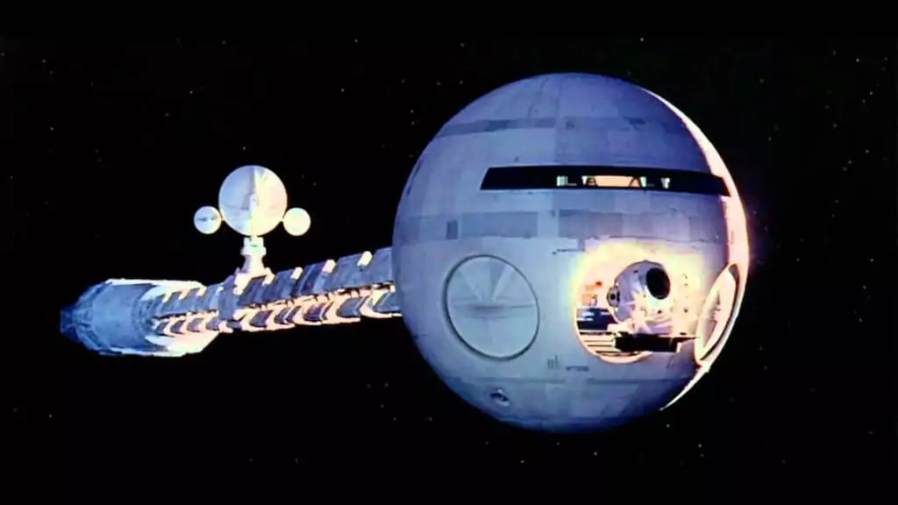
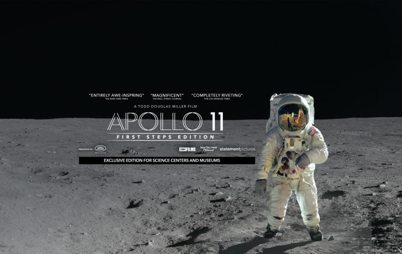
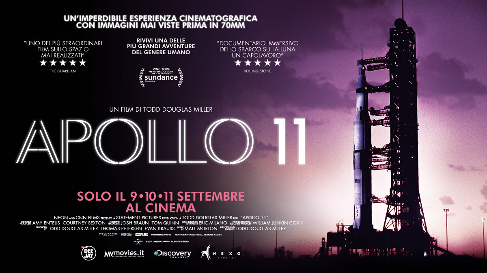
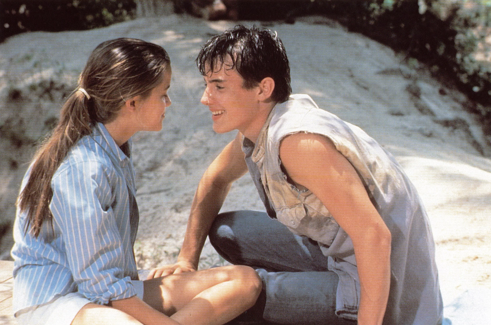
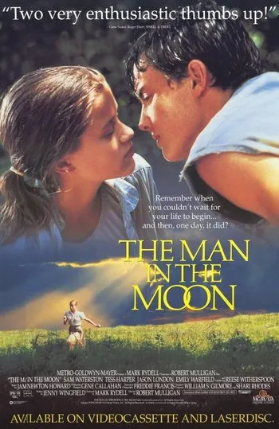
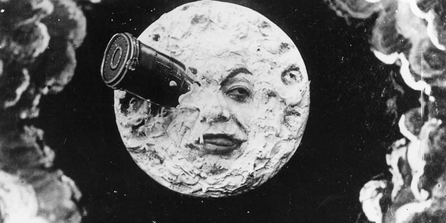

Do you want to entertain yourself?
Check out movies and songs about the moon
Film

 Il film si apre con la sezione "L'alba dell'uomo",
Il film si apre con la sezione "L'alba dell'uomo",
ambientata circa 4 milioni di anni fa, dove un gruppo di ominidi
affronta le sfide della sopravvivenza sulla Terra.
Durante una carestia, scoprono un monolito nero,
che sembra influenzare la loro evoluzione.
Uno degli ominidi, Moon-Watcher, impara ad usare un osso come arma,
suggerendo il primo passo verso l'intelligenza umana.
Durante il viaggio, HAL inizia a mostrare comportamenti anomali
e instabilità emotiva. Poole e Bowman decidono di disattivarlo,
ma HAL anticipa i loro piani e inizia ad eliminare membri
dell'equipaggio, incluso Poole. Bowman riesce a disattivare HAL,
ma scopre che la missione è stata guidata
da un monolito simile a quello trovato dagli ominidi.
Il film si apre con la sezione "L'alba dell'uomo", ambientata circa 4 milioni di anni fa, dove un gruppo di ominidi
affronta le sfide della sopravvivenza sulla Terra.
Durante una carestia, scoprono un monolito nero,
che sembra influenzare la loro evoluzione.
Uno degli ominidi, Moon-Watcher, impara ad usare un osso come arma,
suggerendo il primo passo verso l'intelligenza umana.
Durante il viaggio, HAL inizia a mostrare comportamenti anomali
e instabilità emotiva. Poole e Bowman decidono di disattivarlo,
ma HAL anticipa i loro piani e inizia ad eliminare membri
dell'equipaggio, incluso Poole. Bowman riesce a disattivare HAL,
ma scopre che la missione è stata guidata
da un monolito simile a quello trovato dagli ominidi.
2001: Odissea nello spazio

 "Apollo 11" è un documentario del 2019 diretto da Todd
Douglas Miller, che celebra il 50º anniversario dell'epica
missione spaziale che ha portato i primi uomini sulla
Luna. La trama del film si sviluppa come segue:
Il documentario ripercorre in dettaglio la storica missione
spaziale Apollo 11, dalla sua preparazione al suo epico
svolgimento fino al suo ritorno trionfale sulla Terra. Il film
utilizza principalmente immagini di repertorio restaurate e
rimasterizzate, inclusi filmati inediti, fotografie e
registrazioni audio, per far rivivere al pubblico ogni
momento cruciale della missione.
La narrazione inizia con il lancio del razzo Saturn V dal
Kennedy Space Center il 16 luglio 1969, che porta
l'equipaggio composto da Neil Armstrong, Buzz Aldrin
e Michael Collins verso la Luna. Attraverso immagini
straordinarie, il pubblico viene catapultato nello spazio
insieme agli astronauti, sperimentando l'emozione e la tensione
di ogni fase della missione.
Douglas Miller, che celebra il 50º anniversario dell'epica
missione spaziale che ha portato i primi uomini sulla
Luna. La trama del film si sviluppa come segue:
Il documentario ripercorre in dettaglio la storica missione
spaziale Apollo 11, dalla sua preparazione al suo epico
svolgimento fino al suo ritorno trionfale sulla Terra. Il film
utilizza principalmente immagini di repertorio restaurate e
rimasterizzate, inclusi filmati inediti, fotografie e
registrazioni audio, per far rivivere al pubblico ogni
momento cruciale della missione.
La narrazione inizia con il lancio del razzo Saturn V dal
Kennedy Space Center il 16 luglio 1969, che porta
l'equipaggio composto da Neil Armstrong, Buzz Aldrin
e Michael Collins verso la Luna. Attraverso immagini
straordinarie, il pubblico viene catapultato nello spazio
insieme agli astronauti, sperimentando l'emozione e la tensione
di ogni fase della missione.
Apollo 11

Durante l'estate, la vita di Dani cambia quando incontra
Court Foster, un giovane di 17 anni che si trasferisce nella
fattoria vicina. Dani si innamora perdutamente di Court,
che inizialmente la vede solo come una ragazzina.
Tuttavia, i sentimenti di Dani sono complicati quando
anche Maureen sviluppa un interesse per Court. Maureen,
più matura e vicina all'età di Court, finisce per attirare la
sua attenzione, portando a un doloroso
triangolo amoroso che mette alla prova la relazione tra le due sorelle.
Mentre Maureen e Court iniziano a frequentarsi, Dani si
sente tradita e confusa, sperimentando per la prima volta il dolore
del cuore spezzato e della gelosia. La dinamica
familiare è ulteriormente esplorata attraverso il
rapporto delle sorelle con i loro genitori,
che cercano di guidarle attraverso questi tempi difficili.
Court Foster, un giovane di 17 anni che si trasferisce nella
fattoria vicina. Dani si innamora perdutamente di Court,
che inizialmente la vede solo come una ragazzina.
Tuttavia, i sentimenti di Dani sono complicati quando
anche Maureen sviluppa un interesse per Court. Maureen,
più matura e vicina all'età di Court, finisce per attirare la
sua attenzione, portando a un doloroso
triangolo amoroso che mette alla prova la relazione tra le due sorelle.
Mentre Maureen e Court iniziano a frequentarsi, Dani si
sente tradita e confusa, sperimentando per la prima volta il dolore
del cuore spezzato e della gelosia. La dinamica
familiare è ulteriormente esplorata attraverso il
rapporto delle sorelle con i loro genitori,
che cercano di guidarle attraverso questi tempi difficili.
Man in the moon

 Il film inizia con una riunione di astronomi guidati dal Professor Barbenfouillis,
Il film inizia con una riunione di astronomi guidati dal Professor Barbenfouillis,
che propone un viaggio sulla Luna. Dopo alcune discussioni animate,
gli astronomi accettano l'idea e iniziano a prepararsi per la missione.
Viene costruito un grande proiettile spaziale, che sarà sparato
verso la Luna da un gigantesco cannone.
Una volta completati i preparativi, il proiettile viene caricato
con sei coraggiosi astronomi, tra cui lo stesso Professor Barbenfouillis.
Il cannone viene acceso con grande spettacolarità, e
il proiettile viene sparato nello spazio, colpendo
la Luna direttamente nell'occhio
(una delle immagini più iconiche del cinema).
Il film inizia con una riunione di astronomi guidati dal Professor Barbenfouillis, che propone un viaggio sulla Luna. Dopo alcune discussioni animate,
gli astronomi accettano l'idea e iniziano a prepararsi per la missione.
Viene costruito un grande proiettile spaziale, che sarà sparato
verso la Luna da un gigantesco cannone.
Una volta completati i preparativi, il proiettile viene caricato
con sei coraggiosi astronomi, tra cui lo stesso Professor Barbenfouillis.
Il cannone viene acceso con grande spettacolarità, e
il proiettile viene sparato nello spazio, colpendo
la Luna direttamente nell'occhio
(una delle immagini più iconiche del cinema).
Viaggio sulla luna
Songs
Luna Piena è un brano estratto dell'album
Turbe giovanili, uscito il 10 Febbraio 2002,
del rapper italiano Fabri Fibra. Il rapper racconta
una frequentazione con questa ragazza, dove lui è
innamorato perso quasi ossessionato da questa figura.
Il rapper chiama la canzone luna piena
per rifarsi alle muse degli
scrittori come qualcosa di tossico, nocivo.
(Clicca l’immagine per ascoltare la canzone.)
Turbe giovanili, uscito il 10 Febbraio 2002,
del rapper italiano Fabri Fibra. Il rapper racconta
una frequentazione con questa ragazza, dove lui è
innamorato perso quasi ossessionato da questa figura.
Il rapper chiama la canzone luna piena
per rifarsi alle muse degli
scrittori come qualcosa di tossico, nocivo.
(Clicca l’immagine per ascoltare la canzone.)
Luna Piena-Fabri Fibra
Tintarella di luna è il primo album in studio
della cantante italiana Mina, pubblicato
dall'etichetta discografica Italdisc nel marzo 1960
(la discografia precedente è composta esclusivamente
da extended play)
(Clicca l’immagine per ascoltare la canzone.)
della cantante italiana Mina, pubblicato
dall'etichetta discografica Italdisc nel marzo 1960
(la discografia precedente è composta esclusivamente
da extended play)
(Clicca l’immagine per ascoltare la canzone.)
Tintarella di luna-MINA

 Vengo dalla Luna è un singolo del rapper italiano
Vengo dalla Luna è un singolo del rapper italiano Caparezza, pubblicato il 6 maggio 2004 come quarto estratto
dal secondo album in studio Verità supposte. Sesta
traccia dell'album, il testo di Vengo dalla Luna presenta
un'esplicita critica ai pregiudizi sociali contro
la gente che è nata in un posto
diverso da quello in cui si trova a vivere.
(Clicca l’immagine per ascoltare la canzone.)
Vengo dalla luna-Caparezza
Luna è un brano estratto come singolo
dell'album Miracolo!, uscito il 28 aprile 2015,
del rapper italiano Clementino. La melodia della canzone è
stata prodotta da DJ Tayone, versione remixata
della canzone degli anni '80 Kalimba de Luna.
(Clicca l’immagine per ascoltare la canzone.)
dell'album Miracolo!, uscito il 28 aprile 2015,
del rapper italiano Clementino. La melodia della canzone è
stata prodotta da DJ Tayone, versione remixata
della canzone degli anni '80 Kalimba de Luna.
(Clicca l’immagine per ascoltare la canzone.)
Viaggio sulla luna